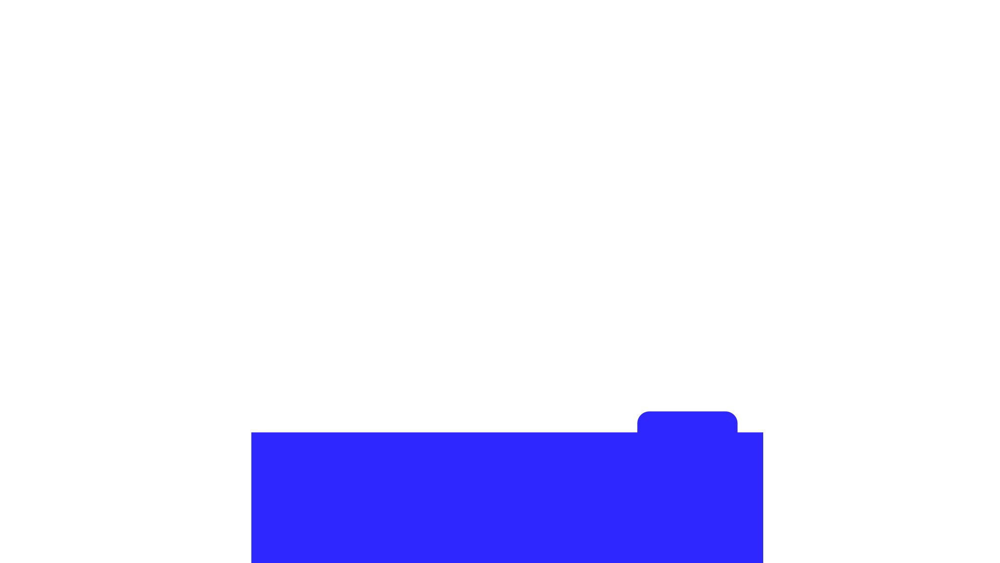

Click the objects to explore
Scroll to explore
Click the objects to explore
Music
Chief Cuddle Officer
Walnut is a two-year-old tuna connoisseur who is absolutely nuts.
She has reviewed every design project by sitting directly on the keyboard at the worst possible moment.
Her hobbies include hallway soccer, chasing Nerf darts through the air, doing somersaults, and neighborhood surveillance from the window.
Her archenemies? Her vet, Rebecca, and shoes.
Calendar
About
I’m a multidisciplinary designer with over a decade of experience working across UX/UI, visual communication, and creative technology.
I’m deeply curious about how people interact with the world around them, from digital interfaces to everyday objects. My work is shaped by systems thinking and a desire to create clear, useful, and engaging experiences.
Whether I’m designing an app, shaping a campaign, prototyping interactions, or exploring a new medium, I’m always looking for ways to make complex things feel simple.
Outside of design, you’ll usually find me playing puzzle platformers, exploring thrift stores, or playing Chopped in the kitchen with my partner.
Let’s Work Together! · hmagdesign@proton.me
Beyond the screen
My curiosity doesn’t stop at pixels. I’m drawn to physical objects: how they’re built, assembled, repaired, and interacted with over time.
I’m fascinated by the thinking behind everyday things: the problems they solve, the constraints that shaped them, and the countless small decisions that influence how they function.
Whether I’m taking apart old electronics, building prototypes, or studying a mechanism, I’m always looking to understand how things work and why they were made that way.
Traditional Mediums
Risograph and screen printing hold a special place in my practice. Their grain, ink registration, and tactile qualities can't be replicated on a screen and that's exactly why I love them.
Working with traditional mediums keeps me connected to process, craft, and materiality. It encourages experimentation, embraces imperfection, and leaves room for the happy accidents that often lead to unexpected discoveries.
Education
My foundation in design and photography shaped the way I observe, think, and create. Curious by nature, I’m constantly exploring new skills through classes, workshops, and self-directed learning. For me, education is an ongoing process of refining, expanding, and challenging the way I see the world.
2017
B.A. Design Studies
Emphasis in Graphic Design · Minor in Photography
San Jose State University
2024
UX & UI Bootcamp
Product design, research, and interaction design
Memorisely
Born in
Born and raised in Hidalgo, Mexico, I grew up surrounded by creativity built from limitation. Resources were often scarce, teaching me to be imaginative with what I had and to value objects, materials, and systems made to last.
Some of my earliest inspiration came from everyday life in Mexico: bold colors, repeating patterns, hand-painted storefront typography, and handmade ways of communicating. I was fascinated by how something created with very little could still feel powerful. That honesty in DIY visual communication still influences my work today.
Moving to the United States gave me the opportunity to put language and structure to interests in design, visual communication, and technology I had been developing for years.
Living between both experiences shaped my perspective. Mexico taught me creativity through limitation, intuition, and improvisation, while the U.S. gave me the tools and opportunities to combine hands-on craft with digital design and technology.
Today, Oakland, California is home.
Photography
I picked up a point-and-shoot camera in high school and haven’t put it down since. Photography became another way for me to explore composition, perspective, and the way people experience a moment.
I shoot both film and digital, but film especially taught me patience and intentionality. With only 36 exposures, every frame becomes deliberate, a moment frozen in time that can never be recreated in exactly the same way again.
Photography continues to shape the way I see, notice, and frame the world around me.
